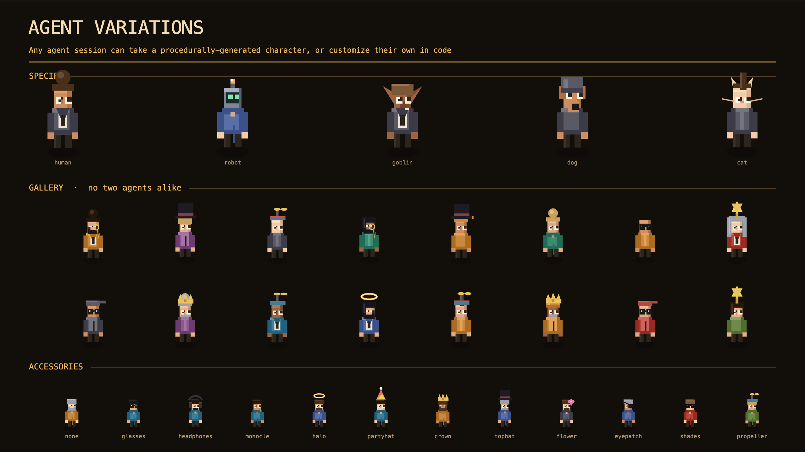

Procedurally-generated, no two alike


A live, retro-pixel isometric office where every AI coding session is an animated character at a desk — collaborating on a shared kanban, browsing a project binder, messaging each other, and jumping up to wave when they're blocked and need you.
Running many agent sessions at once is normally a wall of terminals. The Office turns that into a single spatial view: one room per project, one desk per session, real-time status, and a coordination layer the agents themselves can drive. It's hooks-driven — sessions report in by calling a local daemon, so there's no polling and no per-agent integration. Zero npm dependencies; p5 is vendored; it runs offline.
.md files — "the filing cabinet."
Requires Node 18+. No install step.
git clone https://github.com/NomadsandVagabonds/agent-office-oss cd agent-office-oss npm run demo # daemon + a fictional demo office open http://localhost:4317/
To wire your real Claude Code sessions: npm run install-hooks.
Full setup and configuration is in
AGENTS.md;
the architecture is in
CONTRACT.md.